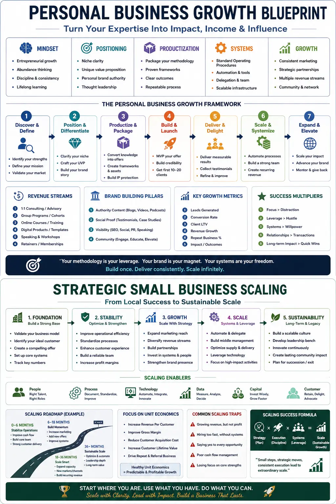
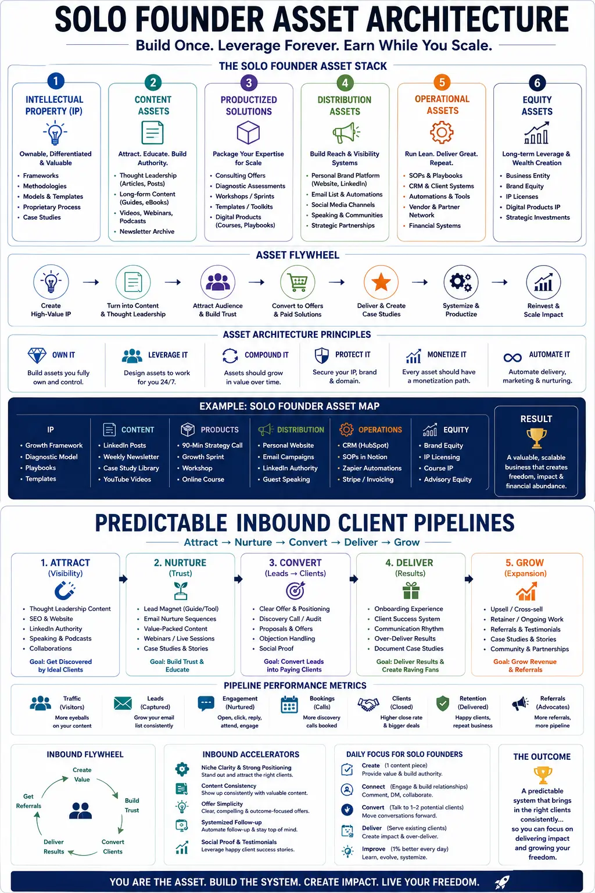

A Personal Business Growth Blueprint to Productize Your Methodology for Enterprise Teams
Breaking the Ceiling: From Hourly Billing to Systemized Scaling
In the competitive arena of professional services, many founders hit an invisible ceiling where their revenue is directly tethered to the number of hours they can work. This is particularly true for independent consultants, strategic advisors, and agency owners who strive for Personal Business Growth but find themselves trapped in the daily execution of client deliverables. When you are selling your time, your business is not a scalable asset—it is a job that you happen to own. This dilemma becomes even more pronounced when attempting to sell services to enterprise organizations. Large corporate clients require high levels of assurance, repeatability, and consistency that a single individual, working in a custom, ad-hoc manner, simply cannot sustain. To transition from a technician who performs the labor to an enterprise-ready partner, you must establish a blueprint for Strategic Small Business Scaling. This means shifting your focus from delivery hours to asset creation, turning your proprietary methodology into a packaged, licensed product that can be deployed across enterprise departments without requiring your personal presence in every workshop.
The foundation of this transition lies in building a Solo Founder Asset Architecture. By auditing your past successful projects, you can distill your unique expertise into structured assets, frameworks, and templates. Instead of pitching "consulting projects" that require long scoping calls and lead to custom scopes of work, you sell a predefined methodology. This productized service model enables you to serve larger corporate clients who want a clear, repeatable path to an outcome, rather than an open-ended engagement. For service business owners, this is the most critical shift. When your methodology is productized, it can be licensed to internal teams at enterprise companies, who can then self-deliver the results using your pre-recorded video guides, playbook documents, and diagnostic spreadsheets. This shift allows you to break the link between hours worked and revenue generated, unlocking sustainable profit margins and positioning your firm as a vendor rather than an individual contractor.
To make this model work, you need robust Growth plans for service business owners that outline how you will market and deliver these assets. Many founders fail because they do not have a systematic way of attracting new opportunities, leading to the dreaded feast-or-famine cycle. By creating predictable inbound client pipelines that are driven by authority content, educational resources, and automated marketing funnels, you can build trust with corporate decision-makers before they ever speak with you. Large companies do not buy services; they buy solutions to specific business pain points. If your inbound pipeline is built around explaining how your productized methodology solves these specific pain points, you will attract high-intent enterprise buyers who are ready to invest. When these pipelines are integrated with revenue path automation, the entire process from lead capture and qualification to call scheduling and contract signing happens seamlessly in the background, freeing you from manual admin tasks and enabling you to focus on system design.
Operating a highly leveraged business with a minimal team structure is the hallmark of high-profit micro-enterprises. Instead of hiring a large team of full-time employees, which increases operational friction, overhead, and administrative headache, you run a lean team supported by automation. Your business model centers on selling high-margin, productized intellectual property, while delegating delivery administration and technical execution to a network of specialized contractors and automated systems. This lean operational setup allows you to maintain profit margins of 80% or more, which is unheard of in traditional agency models. However, managing this transition successfully requires clear personal development goals for work performance. You must shift your mindset from that of a hands-on service provider to a systems architect. Instead of focusing on "how do I do this task?" your development goals should focus on "how do I document, automate, and delegate this task?" This shift is crucial for solo founders who want to scale their systems without scaling their personal working hours.
A key component of this operational setup is operational resource planning. This involves cataloging all the tools, templates, and workflows required to deliver your productized services. By mapping out every step of the client journey—from onboarding to offboarding—you can identify manual bottleneck points and replace them with automation. Standard operating procedures (SOPs) should be written for every technical deliverable, ensuring that if you hire a contractor to execute a task, it is done to your exact quality standards. operational resource planning ensures that your business can function smoothly and consistently without your daily intervention, transforming your business from a service-delivery company into a self-sustaining asset. By automating the delivery pathways and client touchpoints, you build a business that is not dependent on your personal physical presence, facilitating long-term asset value.
Time Decoupling
By building a robust Solo Founder Asset Architecture, you separate your business revenue from your personal calendar. This allows you to scale sales and support more clients without scaling your working hours, driving substantial Personal Business Growth.
Strategic Scaling
Transitioning from bespoke hourly services to a productized methodology enables Strategic Small Business Scaling. This ensures that you can take on larger corporate accounts and licensing deals without hiring an army of full-time employees.
Predictable Lead Flow
Setting up predictable inbound client pipelines ensures a steady stream of enterprise leads. You stop wasting time on manual outreach and let your authority assets attract qualified corporate buyers who need your methodology.
Automated Workflows
Implementing revenue path automation within your delivery pipeline cuts out manual admin tasks. Onboarding, invoicing, and contract management happen in the background, freeing you to focus on strategy.

Intellectual Property Codification: Designing Your Asset Base
Let us take a deeper look at the mechanism of Strategic Small Business Scaling. When a solo founder decides to scale, the traditional path is to hire more service delivery staff. However, this creates a major problem: as your client base grows, your management overhead grows exponentially. You spend all your time managing people, resolving client disputes, and reviewing custom deliverables. This is not scaling; it is simply growing a complex organization. A more elegant path is to scale your intellectual property. By productizing your methodology, you can sell the same asset to hundreds of enterprise teams. Enterprise buyers prefer productized methodologies because they are predictable. They know exactly what they are getting, how long it will take, and what the outcomes will be. For example, rather than selling a "marketing strategy consulting project," you sell a "90-Day Enterprise Growth Playbook" that is delivered through a structured combination of automated portal lessons, weekly Q&A calls, and templated deliverables. This allows you to serve 50 corporate clients simultaneously with the same operational resources that would normally be required for 5 custom clients, driving massive growth.
This approach requires a highly structured Solo Founder Asset Architecture. Think of your business as a collection of assets: your brand, your proprietary methodology, your automated systems, and your client databases. Each asset must be designed to operate independently. Your methodology is codified into templates, video training, and step-by-step playbooks. Your onboarding and invoicing systems are automated using tools like Zapier, Stripe, and specialized client portals. By building this architecture, you create a business that has value independent of your daily labor. If a competitor wants to buy your company, they are not buying your time; they are buying your asset architecture—your systems, your brand, and your recurring revenue paths. This is the ultimate goal of Personal Business Growth: to create an enterprise that can run, sell, and deliver value without you. For solo founders, this is the only way to achieve both high revenue and personal freedom.
To support this asset-based model, you must develop comprehensive Growth plans for service business owners. These plans should outline the transition from custom services to productized solutions in phases. In the first phase, you audit your service history to identify your most profitable, highest-performing custom offerings. You package this core service into a fixed-scope productized offering. In the second phase, you build the marketing and sales infrastructure to sell this package. This is where you establish your predictable inbound client pipelines by creating high-value content, such as whitepapers, case studies, and mini-courses that target the pain points of enterprise team leaders. In the third phase, you focus on operational efficiency and automation, implementing revenue path automation to handle everything from invoicing and onboarding to feedback surveys and referral requests. This phased roadmap ensures that you maintain consistent cash flow during the transition, protecting your business from the disruption that often accompanies structural changes.
IP Codification
Turn your custom services into a standardized methodology that enterprise teams can easily license and self-deliver. This is the cornerstone of your Solo Founder Asset Architecture.
Operational Systems Design
Optimize your delivery workflow through thorough operational resource planning. By mapping out every step and templates, you create standard procedures that keep your business agile.
Automated Onboarding
Configure automated customer onboarding and data collection pipelines. With revenue path automation, your clients get a seamless experience without you sending a single manual email.

Automating the Inbound Pipeline and the Delivery Engine
Let us discuss the role of predictable inbound client pipelines in achieving sustainable enterprise sales. Large corporations do not make impulse decisions; their buying process is slow, structured, and risk-averse. To win their business, you must build authority and trust over time. An automated inbound pipeline accomplishes this by positioning you as an expert in your niche. By regularly publishing insights about enterprise operational challenges and sharing case studies of how your methodology has helped similar organizations, you build a library of authority assets. When a corporate buyer searches for a solution to their problem, they find your content. They opt into your newsletter, read your whitepapers, and watch your video walkthroughs. Over time, your automated nurturing sequences build trust, leading them to book a discovery call. Because they have already consumed your educational materials, they arrive on the call pre-sold on your methodology. This reduces the sales cycle, eliminates the need for cold outreach, and ensures a steady stream of highly qualified opportunities for your business.
Once a lead enters your funnel, revenue path automation takes over. This system manages the lead from the moment they book a call to the completion of their project. When a prospect schedules a meeting, the system automatically sends them a questionnaire to qualify them. If they qualify, they receive a confirmation email with a link to prepare for the meeting. If they purchase your productized service, the invoicing, contract signing, and client onboarding portal creation happen automatically. Throughout the project delivery phase, the system sends automated progress updates and requests feedback at key milestones. By automating these operational pathways, you eliminate manual administrative bottlenecks, ensure a consistent and professional client experience, and free up your calendar to focus on strategic business development. This level of automation is essential for solo founders who want to run high-profit micro-enterprises without getting bogged down in day-to-day administrative work.
Transitioning to this model requires careful operational resource planning. You must map out all the tools and resources required to support your automated systems. This includes your CRM, email marketing platforms, project management tools, document automation software, and file storage systems. Each tool must be integrated to ensure data flows seamlessly from one stage of the customer journey to the next. For example, when a new client signs a contract, their details should automatically populate your project management system and create a new folder in your secure cloud storage. This integration minimizes manual data entry and reduces the risk of errors, ensuring your operations remain clean and efficient. Furthermore, your operational resource planning should include a directory of trusted contractors who can handle technical execution, such as graphic design, copywriting, or web development, on an as-needed basis. This on-demand workforce keeps your overhead variable rather than fixed, enabling you to remain agile and highly profitable.
To lead a highly leveraged business successfully, you must establish clear personal development goals for work performance. Running a productized micro-agency requires different skills than executing custom client work. You must develop expertise in business systems engineering, marketing automation, process documentation, and partner management. Your primary focus must shift from "doing the work" to "designing the system that does the work." This transition can be challenging for solo founders who are used to having complete control over every detail. To overcome this, your personal development goals for work performance should prioritize learning how to delegate effectively, write clear standard operating procedures, and manage delivery partners. By focusing on your personal growth as an operator and systems architect, you build the capabilities required to run a scalable enterprise, ensuring that you do not become the bottleneck in your own business's growth.
Ultimately, the transition to high-profit micro-enterprises is about building a business that serves your life, rather than a life that serves your business. By productizing your methodology, building a Solo Founder Asset Architecture, and implementing automated marketing and delivery systems, you can break the link between hours worked and revenue generated. This model allows you to scale your consulting margins, win corporate clients, and secure predictable revenue, all while maintaining a lean, agile business with minimal overhead. It represents the ultimate expression of Personal Business Growth, combining high income potential with personal freedom and operational control. With the right blueprint and structured Growth plans for service business owners in place, any solo founder or service business owner can build a highly valuable, self-sustaining business that can thrive in the modern market.
Key Topics
Ready to Build a Personal Business Growth Blueprint that Productizes Your Method?
At The PhD Ads in Madurai, we specialize in helping consultants, agency owners, and service business owners implement Strategic Small Business Scaling strategies. From designing your Solo Founder Asset Architecture and organizing your operational resource planning to building predictable inbound client pipelines and setting up revenue path automation, we help you transform into one of the most efficient, high-profit micro-enterprises in your industry. Let us help you create a sustainable Personal Business Growth model today.
Email: team@e2o.in